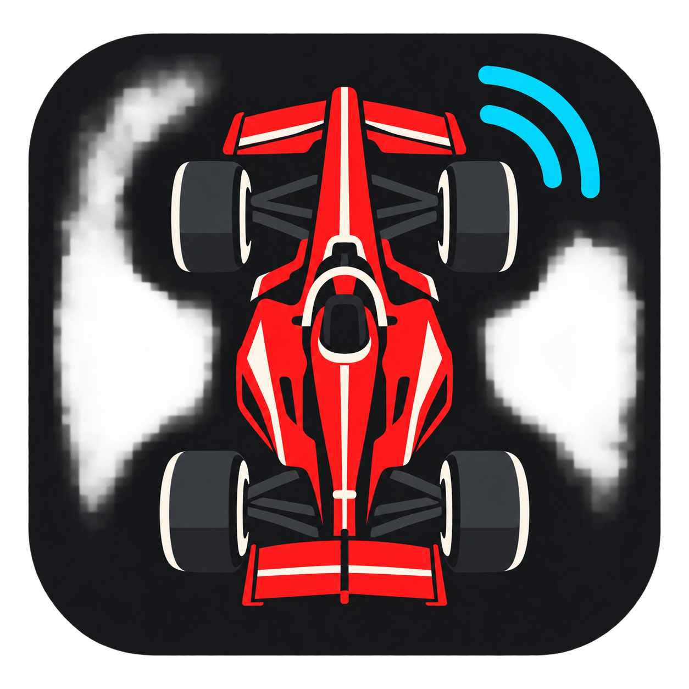

01 / CAPTURE
See what you capture
Eight resize handles, position/size labels and keyboard nudges help define the region. The thumbnail refreshes every ten seconds and opens a larger preview. Save or clear the selection locally.

F1 RADIO TRANSLATORAn independent translation window for MultiViewer. Select English transcripts, recognize new lines locally and compare them with Chinese translations while following driver feedback, team instructions and strategy.
Control the capture region, provider and viewing window. Common controls stay within reach.
Eight resize handles, position/size labels and keyboard nudges help define the region. The thumbnail refreshes every ten seconds and opens a larger preview. Save or clear the selection locally.
Compare Chinese translations with each English line and locally detected speaker labels. Switch to compact mode for a reading-focused window. The app interface is currently Chinese.
Use MyMemory, DeepL or an OpenAI-compatible endpoint. Supported prompts add F1 context. The GPT option requests gpt-6-luna; your upstream must support that model name or alias.
Resume after a pause or start again after stopping. Tray controls restore the window, control translation and exit. The window X exits and cleans up workers.
Remember the region, provider and endpoint locally. Optionally encrypt saved keys for the current Windows user; reveal or hide them to check the input.
A native dark WPF interface with slim scrollbars and manual compact mode. Persistent OCR, frame checks, deduplication and queuing reduce repeated work. Keep the latest 120 results.
Open AI Radio Transcriptions in MultiViewer and make sure the English text is readable.
Include the transcript body and speaker line; check the thumbnail or enlarged preview.
Enter the provider key and endpoint, then start. English originals and Chinese translations update as new lines are recognized.
Screen capture and OCR run locally. Only recognized subtitle body text goes to your selected translation service; speaker labels are not appended. Keys and capture settings are not published with the source.
Read the privacy guide ↗Explore the source, run the app or build your own Windows EXE.
This tool reads on-screen transcripts, not audio. OCR, source transcripts and machine translation may be wrong; recognition, network and provider processing affect delay. Provider fees and quotas apply. Unaffiliated with F1, MultiViewer or the translation providers.